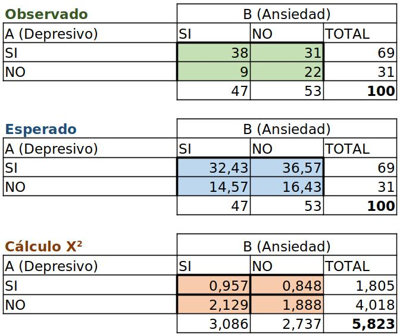

Problema 1.1 - Fumar e Insomnio
P.1.1. Queremos determinar si hay relación entre el hábito de fumar (A) y el hecho de sufrir trastorno en el sueño (B) en una muestra de 150 personas. Con los siguientes datos que mostramos en la tabla de contingencia:
Establece si existe relación entre A y B. Para determinar si existe relación entre el hábito de fumar y el hecho de sufrir trastorno en el sueño utilizaremos prueba de chi-cuadrado para la independencia.
Ejercicio en google driveA=Fumar B=Insomnio
H0:A y B son independientes
H1:A y B no son independientes

Cálculo X2 = 8,744
Grados de libertad 2 = (3 filas - 1) * (2 columnas -1)
X2 Tablas = 5,991
Al ser X2 (8.744) mayor que el valor crítico calculado con las tablas (5.991), rechazamos la hipótesis nula H0. Lo que valida la hipótesis alternativa H1 por lo cual existe relación entre (A) el hábito de fumar y (B) el trastorno en el sueño.
Problema 1.2 - Depresión y Ansiedad
1.2 Un psicólogo desea conocer la relación entre el síntoma depresivos (A) y el síntoma ansiedad (B). Para ello dispone de una muestra de 100 historiales clínicos que mostramos en la siguiente tabla:
Nos preguntamos: ¿Estos dos síntomas son independientes? Consideramos el nivel de significación 0,02.
Ejercicio en google driveA=Síntoma ansiedad B=Síntoma depresivo
H0:A y B son independientes
H1:A y B no son independientes
Cálculo X2 = 5,823
Grados de libertad 1 = (2 filas - 1) * (2 columnas -1)
X2 Tablas = 5,412 (nivel de significancia 0,02)
Al ser X2 (5.823) mayor que el valor crítico calculado con las tablas (5.412), rechazamos la hipótesis nula H0. Lo que valida la hipótesis alternativa H1 por lo cual existe relación entre (A) la depresión y (B) la ansiedad, no son independientes.
Problema 2.1 - Var1
Contenido del problema sobre Var1...
Problema 2.2 - Var2
Contenido del problema sobre Var2...
Problema 3.1 - Relación género y edad
Contenido del problema sobre la relación entre género y edad...
Problema 3.2 - Relación género y sueldo
Contenido del problema sobre la relación entre género y sueldo...
Problema 3.3 - Relación sueldo y cargo
Contenido del problema sobre la relación entre sueldo y cargo...
Problema 3.4 - Relación edad y cargo
Contenido del problema sobre la relación entre edad y cargo...
Problema 3.5 - Relación género y cargo
Contenido del problema sobre la relación entre género y cargo...